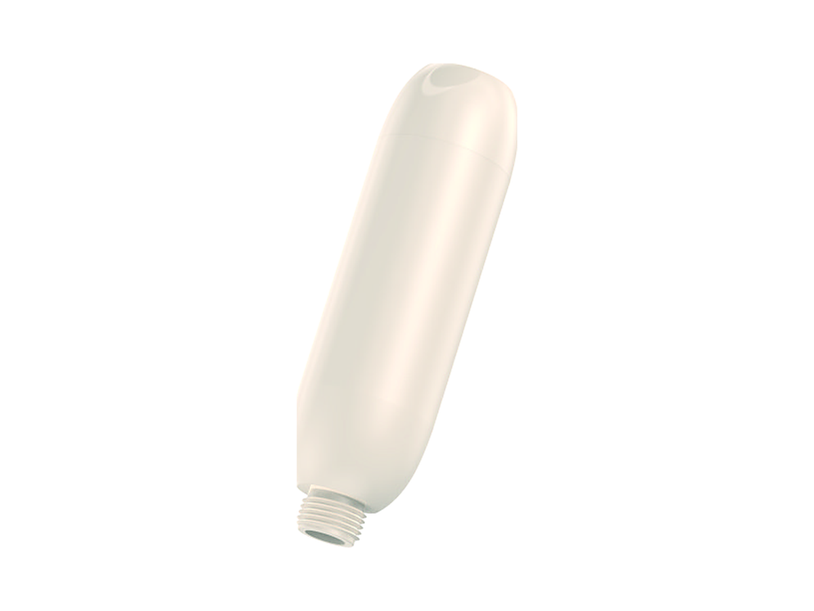

Ducha
DuchaRP-S01
Filtro de ducha de mano
SKU: RP-S01
MOQ: confirmar al consultar
Inicio/Productos/Filtros de ducha/ RP-S03

Filtros de ducha
Filtro de ducha rectangular (CL-SH5) — dos variantes. RP-S03 lidera la familia.
RP-S03 y RP-S04 son dos variantes del mismo filtro de ducha y comparten los valores básicos de especificación siguientes. Difieren en forma de cabezal y cartucho: RP-S03 (cabeza rectangular, carcasa de ABS con acabado pintado, opciones de cartucho ACF / vitamina C + ACF / medio antiincrustante + KDF + ACF); RP-S04 (cabeza en anillo, carcasa de PC + ABS con junta de silicona, cartucho aromático de PP + vitamina C). Las especificaciones se confirman por modelo y pedido.
Solicitar presupuesto para RP-S03
El voltaje / la frecuencia se configuran según el país de destino. Otras configuraciones se confirman por pedido.
RP-S03 es un filtro de ducha que trata el agua antes de que llegue al cabezal de ducha. Viene en dos formas de cabezal — cabeza rectangular y cabeza en anillo — que comparten las mismas especificaciones básicas. Las opciones de cartucho incluyen ACF, vitamina C, medio antiincrustante y KDF, para que el filtro se adapte al agua de los clientes de la marca. Está hecho para propietarios de marca que quieren un producto sencillo de ducha para añadir a una línea de baño.
¿Cuál es la cantidad mínima de pedido?
El primer pedido es de 200 unidades por modelo, y los pedidos repetidos son de 500 unidades.
¿Puedo pedir una muestra antes de un pedido en volumen?
Sí. Las muestras están listas en 15 días y la tarifa de la muestra se reembolsa en su primer pedido en volumen. Los pedidos en volumen tardan 40 días tras la aprobación de la muestra y se envían FOB Shenzhen.
¿Cuánto dura un cartucho?
Aproximadamente 3 meses.
Dos variantes — cotizar como RP-S03 e indicar la variante (cabeza rectangular o cabeza en anillo).
Pase el cursor sobre la imagen de una variante para ver sus especificaciones. En pantallas táctiles, toque una imagen.

Especificaciones completas de cada variante, lado a lado. La tabla de especificaciones más abajo muestra los valores de RP-S03.
| Especificación | RP-S03-1 — cabeza rectangular (CL-SH5) | RP-S03-2 — cabeza en anillo (CL-SH6) |
|---|---|---|
| Forma del cabezal | Rectangular | Anillo |
| Carcasa | ABS; acabado pintado | PC + ABS; anillo de sellado de silicona |
| Cartucho | ACF / vitamina C + ACF / medio antiincrustante + KDF + ACF | PP + cartucho aromático de vitamina C |
| Opción de salida | A confirmar por pedido | Opción de aireador; configuración por pedido |
| Fuente de agua | Agua corriente municipal | Agua corriente municipal |
| Presión de trabajo | 0.1-0.4 MPa | 0.1-0.4 MPa |
| Temperatura del agua | 5-60°C | 5-60°C |
| Caudal de agua | 5-7 L/min | 5-7 L/min |
| Vida útil del cartucho | Aproximadamente 3 meses | Aproximadamente 3 meses |
7 filas de especificaciones del catálogo de ROPureOEM.
| Carcasa | ABS; acabado pintado |
|---|---|
| Opciones de cartucho | ACF / vitamina C + ACF / medio antiincrustante + KDF + ACF |
| Fuente de agua | Agua corriente municipal |
| Presión de trabajo | 0.1-0.4 MPa |
| Temperatura del agua | 5-60°C |
| Caudal de agua | 5-7 L/min |
| Vida útil del cartucho | Aproximadamente 3 meses |
Las especificaciones proceden del catálogo de ROPureOEM. Cuando un valor aún no está confirmado, se indica como «Confirmado por pedido» — no publicamos cifras sin confirmar.
DuchaFiltro de ducha de mano
SKU: RP-S01
MOQ: confirmar al consultar
 Ducha
DuchaFiltro de ducha portátil
SKU: RP-S10
MOQ: confirmar al consultar

DuchaPrefiltro de ducha en línea
SKU: RP-S11
MOQ: confirmar al consultar
 Ducha
DuchaFiltro de ducha multimodo — dos acabados
SKU: RP-S07
MOQ: confirmar al consultar